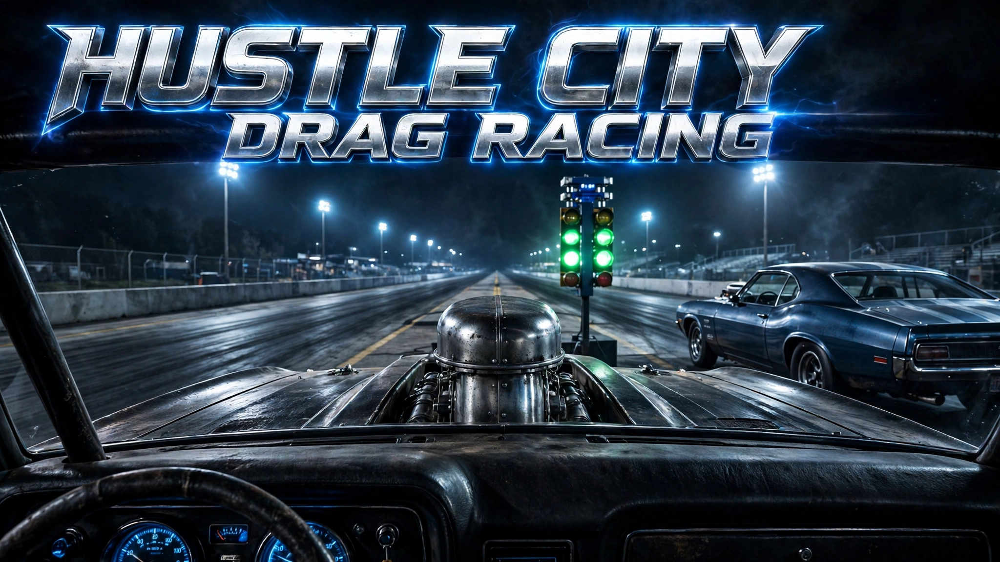

1. Pick a rival in the Garage. First to the finish line — a quarter mile — wins the points.
2. First, the burnout: both cars smoke their tires on the line — that's your actual car, mods and all. Tap GAS to skip it. Then you stage in the outside view and the big tree on screen counts down: stage bulb, three ambers… then GREEN — and the view cuts to the driver's seat for the run.
3. The instant it turns green, press and HOLD the GAS pedal. Your reaction time is how fast you stomp it. Stomp too early and you red-light — you lose on the spot.
4. Keep GAS held down the whole run. Watch the tach needle. When it sweeps into the green zone up top, tap SHIFT. Shift in the green for a perfect shift — too early bogs the motor. Hold it in the red for two full seconds and you will BLOW THE MOTOR — a quick kiss of the red costs nothing, but camp there and the tach flashes, the motor screams, and at two seconds it lets go: DNF, no payout. A perfect start and perfect shifts win every race the car is built for.
5. The blue bar at the top shows both cars — blue is you, red is the rival — so you always know who's ahead from the seat. Split times flash as you pass each marker.
6. Tap NITRO once for a huge shove of speed — that's the 180 mph button. One bottle per race; it hits hardest in the top half of the track.
7. Win to earn street points, then spend them in the Garage parts shop — seventeen parts now, 79 tiers deep: the street catalog (blower, slicks, gears, nitro, lightweight panels, headers & exhaust, suspension, race-fuel tune) runs five tiers each, and past it the Bonneville catalog opens — twin turbos, intercooler, a race ECU, methanol injection, a built drivetrain, a tube chassis, a streamliner aero kit, and a parachute (tech inspection requires one on the salt). Maxing the whole car costs $179,250. First summit: the drag racing record, 346.95 MPH, held by Scotty. Past him, the record chase runs to the outright land speed record: 763 MPH. The very last part in the shop is the WHEELIE BAR — at full power the car stands its front end up on the launch without it, and the run is gone. Every part shows its promised gain in seconds before you buy, and your first slip on new parts shows the gain you actually got. Climb the ladder, then the salt — the top of it all is BIG BODY SCOTTY, already built all the way up, and stock and sloppy won't take his crown.
Keyboard (on a computer): hold Space for gas, ↑ to shift, N for nitro.